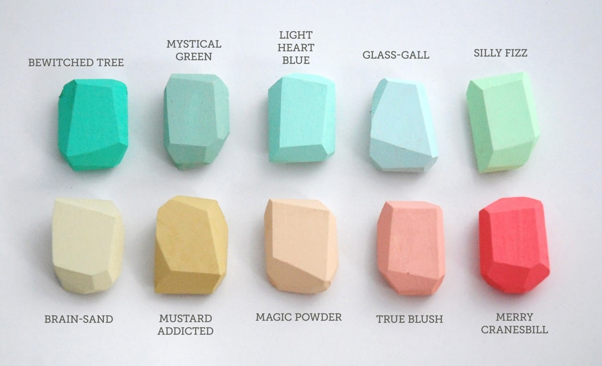

“保障人类健康”是我国生物安全优先考虑的战略重点之一。医学媒介生物及其相关病原体的入侵可引起如登革热、寨卡病毒病、疟疾、锥虫病、血吸虫病、广州管圆线虫病等重要热带病的流行、疫情暴发与扩散，甚至成为重大公共卫生安全事件，对人类健康和社会稳定构成极大威胁。
“保障人类健康”是我国生物安全优先考虑的战略重点之一。医学媒介生物及其相关病原体的入侵可引起如登革热、寨卡病毒病、疟疾、锥虫病、血吸虫病、广州管圆线虫病等重要热带病的流行、疫情暴发与扩散，甚至成为重大公共卫生安全事件，对人类健康和社会稳定构成极大威胁。 查看更多
